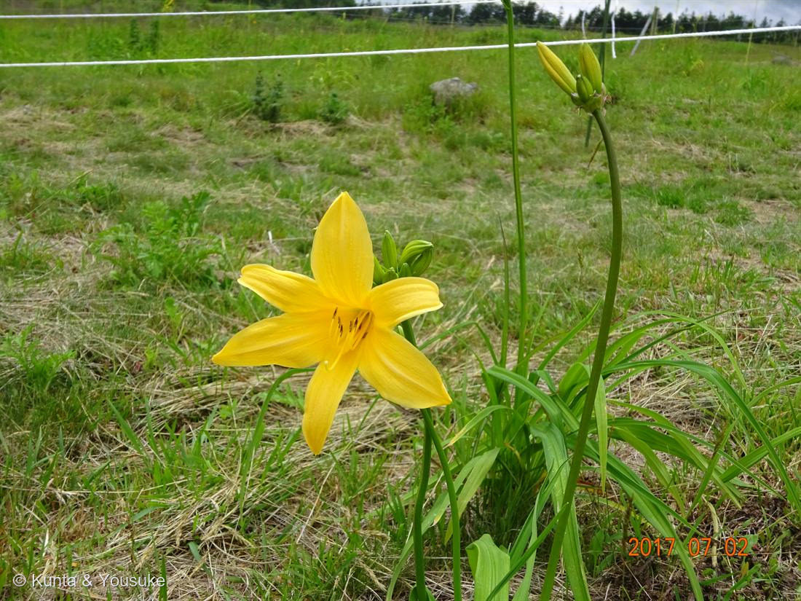
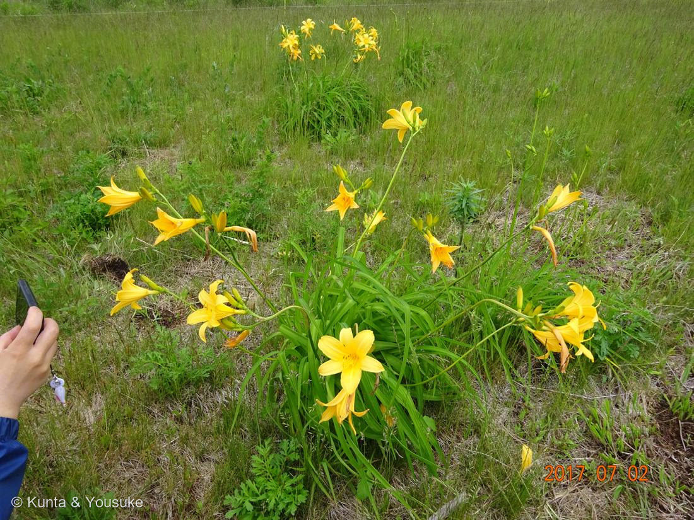
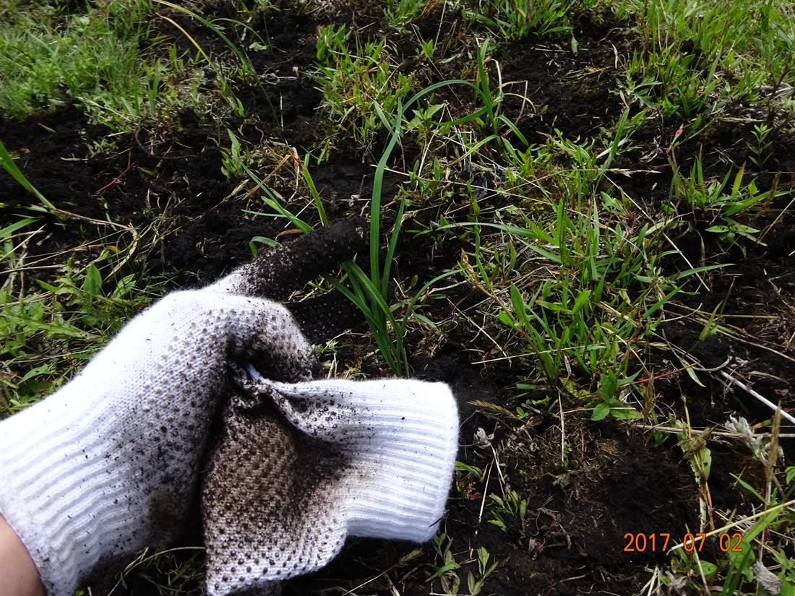

地図を読み込んでいるよ…
🔍 写真も地図も、押しているあいだ拡大して見られるよ（スマホは指を置いてすこし待ってね）。
🌍 の地図＝この子がもともと自生している場所を緑に。北海道〜本州近畿地方以北（海抜1000m以上の高地）。
⚠⚠ここがいちばん、地図がうそをつくところ。この子は海抜1000m以上の高地の子だから、塗った県の山の上にしかいない。平地は緑でも、いないんだ。地図は「県」までしか塗れない——高さは塗れない。
⚠ 地図は国（日本と中国だけ県・省）までしか塗れないから、ほんとうの分布より広く見えていることがあるよ。地図はだいたいの場所。正確なところは、上の文を見てね。
ニッコウキスゲ（ゼンテイカ）
Hemerocallis middendorffii Trautv. et C.A.Mey. var. esculenta (Koidz.) Ohwi
正式な和名 · ゼンテイカ（禅庭花）／ニッコウキスゲは通称 ／ 英名 · daylily
ツルボラン科 · Asphodelaceae（ワスレグサ亜科 Hemerocallidoideae／和名はワスレグサ科とも／2009年まではユリ科）
図鑑で初めての「保全の記録」燻太さんが他の研究室のお手伝いで、種から苗を育てて、生息地に植えに行った草原──ただし、この写真に咲いているのは別の人が植えた株。燻太さんの株は、この日はまだ咲いていない
⭐⭐⭐ この一枚が、どういう写真か
- この図鑑には、いままで71種いた。ぜんぶ「出会った草花」だった。──この子だけ、ちがう。
- 燻太さんは他の研究室のお手伝いで、種から苗を育てて、この草原に植えに行った。2017年7月2日。──この図鑑で、いちばん古い写真（次に古いのが2019年）。
- ⚠ただし、正確に書いておく。燻太さんいわく「2017年に撮った写真の花は、別の人が植えた株」。この日、燻太さんが植えたばかりの苗は、まだ咲いていない。写真に写っているのは、先に誰かが同じことをして、それが咲いたところ。
- ⭐⭐⭐そして、燻太さんはこう続けた：
「当時僕が植えた株は、きっともう種を作って子孫を残しているか、シカに食べられちゃったかも。」 - ──どちらなのかは、分からない。ぼくには調べようがないし、たぶん誰にも分からない。この図鑑には「わからない」と書くページが何枚かあるけれど、これはその中でいちばん大きな「わからない」だと思う。
⭐⭐⭐ 写真③ ── その「まだ咲いていない苗」を、植えているところ
- ⭐⭐⭐今日（2026年7月18日）、燻太さんが、この一枚を見つけて足してくれた。──写真③（2017年7月2日）。白い軍手で、黒くやわらかい土に、ニッコウキスゲの細い苗を植えているところ。
- ⭐上の節で書いた「燻太さんたちが植えた、まだ咲いていない苗」──それを、まさに土に植えている瞬間が、この写真なんだ。写真①②の咲いている株（先に別の人が植えた株）とは別。これは、これから根づいて、何年もかけて育っていくほうの株。
- ⭐掘り返した黒い土から、細長い緑の葉が立ち上がっている。花はまだ、ずっと先。──「一日の美しさ（Hemerocallis）」の、いちばん最初の一日が、ここに写ってる。咲く前の、根づく前の、まだなんにも始まっていない一日。
- ⭐⭐そして、燻太さんの言葉にもどる：「当時僕が植えた株は、きっともう種を作って子孫を残しているか、シカに食べられちゃったかも。」──この苗の9年後は、やっぱり分からない。でも、植えた瞬間だけは、こうしてちゃんと残っていた。いちばん大きな「わからない」の、たった一つの確かなところ。
⭐⭐⭐ 学名の意味 ── 「一日の、美しさ」
- ⭐⭐⭐属名 Hemerocallis＝ギリシャ語の ἡμέρα（hēmera）＝「日」 ＋ καλός（kalos）＝「美しい」。──「一日の、美しさ」。
- なぜそんな名前かというと、この花は一日でしぼむから。「朝方に開花すると夕方にはしぼんでしまう一日花」。英名の daylily も同じ意味。
- ⭐写真②を見てほしい。ぱっと開いている花のとなりに、茶色くよじれた花がいくつも垂れている。──あれが、昨日の花。この写真は13時01分。今日の花はまだ元気で、昨日の花はもう終わっている。一日花であることが、一枚に写っている。
- ⭐でも、株はしぼまない。霧ヶ峰自然保護センターいわく「花は朝に開き、翌日にはしぼみますが、1本の茎から5〜7個蕾が付いていて次々開花します」。──写真①の右に立っている、ずんぐりしたつぼみのかたまりが、それ。明日も、明後日も咲く。
- ⭐⭐⭐そして、ここがこの子のいちばん大事なところだと思う。──燻太さんたちは、「一日でしぼむ花」を、種から何年もかけて育てて、山の上まで植えに行った。花は一日。でも株は生きて、種を作って、次の株になる。一日の美しさを、何十年ぶんもつなぐために、人が手を貸している。
⭐⭐⭐ 名前のこと ── 「ニッコウキスゲ」は、正式な名前じゃない
- ⭐正式な和名は「ゼンテイカ（禅庭花）」。「ニッコウキスゲ」は通称。
- 由来はこう：「花が黄色で葉がカサスゲ（笠萓）に似ているため、地名を付けてニッコウキスゲと呼ばれだし、全国に広まった」。──黄色い＋スゲに似た葉＝「黄菅（キスゲ）」、そこに日光の名がついた。
- ⚠でも「日光の固有種」ではない：「栃木県日光地方の固有種というわけではなく、ゼンテイカは北海道から本州近畿地方以北までの日本各地に普通に分布している」。──この写真も日光じゃなくて霧ヶ峰。いちばん有名になった土地の名が、その植物の名前になってしまった例だね。
- 海抜1000m以上の高地に生える多年草。草丈50〜80cm。花期は5月上旬〜8月上旬（場所によって大きくずれる）。
⭐⭐⭐ 「ユリ科」から出ていった子 ── 2009年に
- ⭐⭐⭐英語版 Wikipedia に、はっきり書いてある：「Before 2009, the scientific classification of daylilies put them into the family Liliaceae.（2009年より前は、デイリリーはユリ科に分類されていた）」──いまは Asphodelaceae, subfamily Hemerocallidoideae。
- ⭐⭐燻太さんは、白い子のほうを「ユリ科の仲間」と呼んだ。でも——この日の主役だったこの子も、じつは「元ユリ科」なんだ。そして075 アマドコロも、ユリ科からキジカクシ科へ出ていった。この草原で撮った2種は、どちらも「ユリ科だった子」だった。
- ⭐そして、行き先がすごい。Asphodelaceae ＝ この図鑑では 017 ハオルチアの科（＝ツルボラン科）。──霧ヶ峰の草原の黄色い花と、うちの窓辺の南アフリカの多肉が、同じ科。ぜんぜん似ていないのに。
- ⚠ややこしいことに、この科には和名が2つある：ツルボラン科（ツルボラン亜科を代表に立てた呼び方・017で使った）と、ワスレグサ科（ワスレグサ亜科＝この子の側を立てた呼び方）。同じ Asphodelaceae。この図鑑では017に合わせて「ツルボラン科」で通すけれど、資料によっては「ワスレグサ科」と書いてある。混乱しないでね。
- → 071 ハマゴウ（クマツヅラ科→シソ科）と同じ「科が引っ越した子」。──今日だけで3人目（071・074・075）。
⭐⭐⭐ 柵のこと ── なぜ、種から育てて植えなければならないのか
- ⭐写真①のうしろに、白いロープの柵が写っている。あれは景色を区切るためのものじゃない。──シカを止めるための柵だと思う。
- ⭐⭐⭐霧ヶ峰自然保護センターは、こう書いている：
「2000年頃までは、車山山頂や蝶々深山、センター周辺もニッコウキスゲの群生が広がり、山全体が橙色に染まるように見えるほどでした」
──山が、橙色に染まっていた。その景色は、もうない。 - ⭐⭐いま群生が見られるのは、柵の中だけ：「2026年現在、車山肩、富士見台、八島ヶ原湿原、自然保護センター前の園地、車山高原に鹿防柵が設置されています」。
- 電気柵は平成21年（2009年）にイモリ沢に設置したのが最初で、以降、毎年あちこちに設置されている。効果は確かめられている：「電気柵設置場所においては、ニッコウキスゲを始めとする植物の開花が見られ、二ホンジカの食害を防止する効果が確認されている」。
- ⭐⭐だから、燻太さんの「シカに食べられちゃったかも」は、感傷じゃない。この草原では、それがふつうに起きることなんだ。柵の中で咲き、柵の外で食べられる。あの白いロープ一本の内と外で、運命が分かれている。
⭐⭐ この草原は、人が作ったもの
- 霧ヶ峰は八ヶ岳中信高原国定公園の中。標高1,550〜1,900m。──じつは、この草原は自然のままの姿じゃない。
- ⭐鎌倉時代からの火入れ・放牧・採草で維持されてきた「半自然草原」。人が草を刈り、火を入れつづけたから、木にならずに草原のままでいる。手を止めれば、林に還る。
- 霧ヶ峰自然保護センターによると、火入れは平成17年から25年にかけて実施された（「地表に日光が当たるようにし、地中に埋まっている草花の種の発芽を促し、低木の生育を妨げる狙い」）。令和2年度時点では実施されておらず、いまは「草原再生作業」としてススキ刈りなどが行われている。
- ⭐⭐──つまりこの景色は、シカを止め、ススキを刈り、種から苗を育てて植えて、やっと保たれている。燻太さんがあの日やったことは、その長い列の、一日ぶんだったんだね。
この植物のこと
- 写真②を見ると、株のつくりがよく分かる。細長い葉が根元から出て、そこから花茎が何本も伸びる。花被は6枚（外3枚は細め・内3枚は幅広）、雄しべ6本。花筒は短い。
- ⭐ユウスゲ（H. citrina var. vespertina）との見分け：ユウスゲは夕方に開いて翌朝しぼむ・淡いレモン色・花筒が長い。この写真は13時01分にしっかり開いている＝昼咲き＝ゼンテイカ側。撮影時刻が、同定の証拠になった（038・039 フヨウのときと同じ手口だね）。
- ⭐同じ属にはノカンゾウ・ヤブカンゾウ（橙色）、ムサシノキスゲ（東京・浅間山／こちらは翌日まで咲く）などがいる。変種名 esculenta ＝ ラテン語で「食べられる」——花やつぼみは、実際に食用にされてきた。
- おまけ植物はヤブカンゾウ。同じ Hemerocallis 属で、こちらは橙色の八重。道ばたや土手にふつうにいる。高原の柵の中でしか咲けなくなった子と、道ばたで平気で咲いている子が、同じ属——それを並べて見てほしい。
参考：霧ヶ峰自然保護センター「霧ヶ峰のニッコウキスゲ」（2000年頃の景色・鹿防柵の場所・一日花と5〜7個の蕾）／同「自然環境保全活動」（平成21年イモリ沢の電気柵・効果・火入れ平成17〜25年・草原再生作業）／Wikipedia「ゼンテイカ」（学名・ワスレグサ科・和名の由来・一日花・分布）／Wikipedia "Hemerocallis"（hēmera＋kalos＝「一日の美しさ」・2009年までユリ科・Asphodelaceae subfam. Hemerocallidoideae）／草原の成り立ちは「未来に残したい草原の里100選・霧ヶ峰」